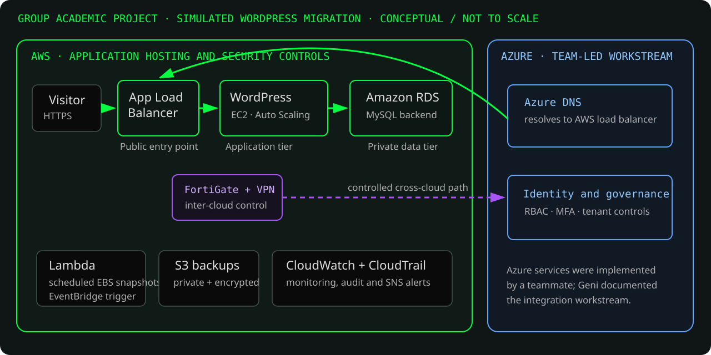

Group academic project · CCC604 · Multi-cloud security integration
Connecting a Multi-Cloud WordPress Environment
A team project that brought application hosting, identity, DNS, network security, monitoring and recovery into one cloud-migration scenario. My documented work centred on AWS and security integration.
The project and its context
Our group worked through a multi-cloud migration scenario for a WordPress application. AWS hosted the application workload, Azure supported identity governance and DNS, and FortiGate was used as a security control point for network inspection and VPN connectivity.
The report assigns me the AWS architecture and implementation work, including VPC networking, EC2, RDS, S3, IAM, Lambda snapshots, monitoring and integration evidence. I also authored the report’s integration section covering how the AWS, Azure and FortiGate parts fit together. Azure platform configuration was a teammate’s workstream; verification and documentation were shared across the group.
How the parts fit together
The AWS workload used WordPress on EC2 behind an Application Load Balancer and Auto Scaling, with Amazon RDS for MySQL. Azure DNS resolved the public name to the AWS load balancer. Azure RBAC, MFA and tenant controls supported governance. FortiGate and VPN routing were included to manage cross-cloud traffic. OpenVPN provided a separate route for authorized private administration.

AWS workstream
Hosting, access and recovery
- Designed VPC public/private subnet separation and reviewed route and security-group boundaries.
- Worked with EC2 WordPress hosting, an RDS MySQL backend, an Application Load Balancer and Auto Scaling.
- Used IAM roles for instance-to-S3 access and Lambda permissions rather than embedding long-lived access keys in scripts.
- Documented scheduled Lambda creation of EBS snapshots, plus a private, encrypted S3 backup bucket as a separate recovery component.
- Included ACM HTTPS, CloudWatch, CloudTrail, SNS and OpenVPN in the AWS security and operations design.
Cross-cloud work
Security and integration
- Integrated the AWS workload with Azure DNS and identity/governance services in the group design.
- Used FortiGate as the firewall/VPN control point for cross-cloud routing and inspection.
- Considered encrypted storage and HTTPS for data in transit and at rest.
- Recorded how the group divided AWS, Azure, coordination, testing and integration responsibilities.
Validation and a useful security lesson
The submitted report’s final verification table marks the main coursework checks complete, including AWS hosting and database setup, load balancing and Auto Scaling, snapshot backup design, CloudWatch/SNS, Azure DNS/HTTPS, and FortiGate/VPN integration. The team documented screenshot-based evidence and test results for the assessment.
One security issue surfaced during testing: an SSH security-group rule was broader than intended. The report records that the team corrected the rule and reviewed related AWS, Azure and FortiGate access controls before final verification. That experience made least privilege feel like a practice that needs review after testing changes, not a one-time checkbox.
The backup section documents EventBridge scheduling for the Lambda snapshot function and a successful snapshot appearing in the AWS console. It treats EBS snapshots and the S3 backup bucket as distinct parts of the recovery plan.
What I learned from working across clouds
Each service boundary adds dependencies: routes and firewall rules affect network reachability, IAM and RBAC affect who can change resources, DNS determines where visitors arrive, and monitoring helps explain what happened. The project taught me to look at the whole path and the hand-offs between people and platforms, not just whether one component appears healthy.
The report also records future improvements and operational risks. The final assessed lab is useful evidence of learning, but it does not replace production validation or prove every control under real operating conditions.